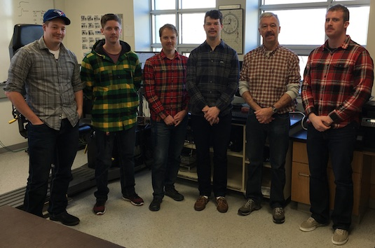
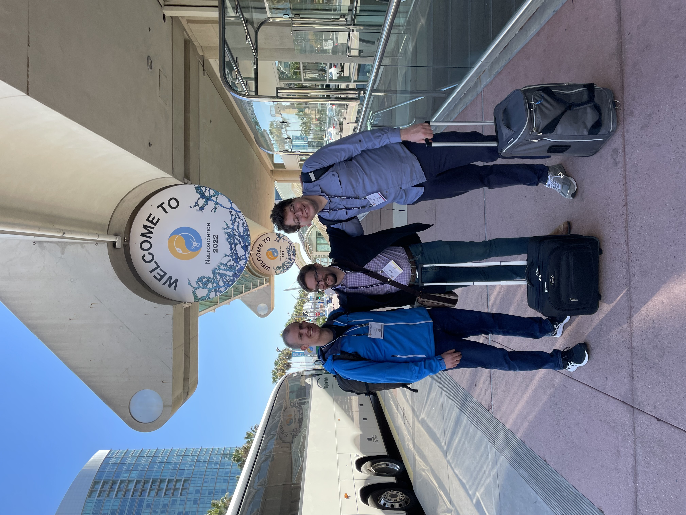
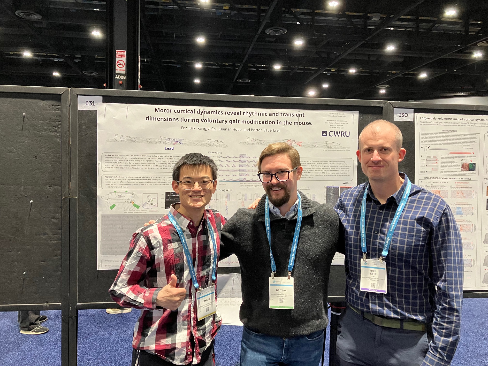
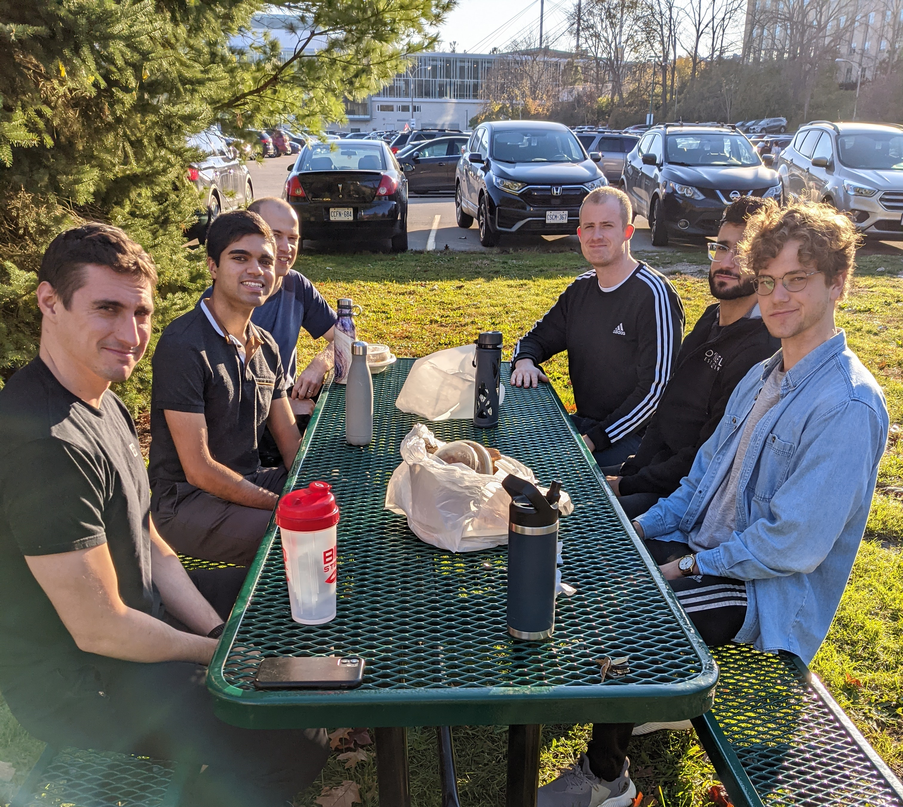

Eric Kirk
I'm a Postdoc in the Department of Neurosciences at Case Western studying the neurobiology of movement. One of my long-term research goals is to understand how changing neural dynamics shape movement across the lifespan.




